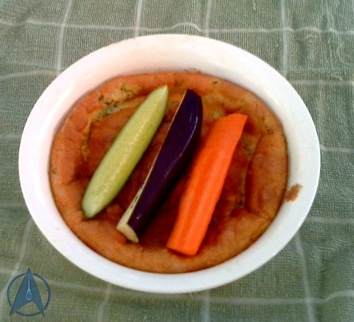

Hasperat Souffle

Description
This souffle is a variation on the more traditional cheese souffle, using hasperat in the place of the cheese.
You’ll need to start a week in advance if you don’t have any hasperat on hand.
The hasperat is distributed evenly throughout the souffle and giving a nice flavour.
Ingredients
- 300g / 10.5oz hasperat, drained, pressed dry and chopped into small pieces
- 60g / 2.1oz butter at room temperature
- 60g / 2.1oz plain flour
- 250ml / 8.5fl oz milk
- Nutmeg, freshly grated
- Black pepper
- 4 eggs, separated
- Breadcrumbs
- Piece each of carrot, eggplant and cucumber, for an optional garnish (use if you want your dish to look more like the one in the episode)